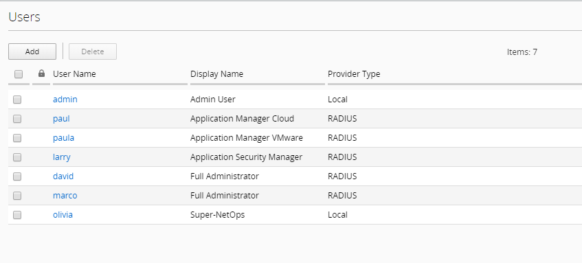

F5 BIG-IQ & Cloud Edition Lab > Class 1: BIG-IQ Application Management and AS3 (Cloud Edition) Source | Edit on
Module 1: Personas (users with roles)¶
In this module, we will learn about the different personas used in the Cloud Edition workflows.
We will use these personas through out the lab. We are not trying to demonstrate full RBAC feature, as this is not the focus.
We will be using 4 main personas for this lab:
David: Full Administrator (previously Marco)
Larry: Security Manager
Paula & Paul: Application Manager
Olivia: Super-NetOps
David will have full access to BIG-IQ. He knows a lot about F5 products (BIG-IQ/BIG-IP). He will provide the access to Larry, Olivia, Paul and Paula. He will also manage the Service Scaling Group (SSG) and application templates.
Larry will manage the Web Application Firewall (WAF) policies. He will work with Paula’s team to define the necessary security policies for each applications. Ensure teams comply with security policies, industry rules and regulations, and best practices. Keeping up to date on threats, determining their potential impact, and mitigating the risks.
Paula and Paul will manage the application deployments, monitor levels of app incidents, building solutions to address identified, prioritized business problems in a timely manner. Maximizing value of app through capabilities design, adoption, and usage. Ensuring that the app fits within the rest of the organization’s app portfolio strategy.
Olivia will try automating whenever possible, to enable efficiency and ability to solve problems at scale. Automate common network patterns that the other teams can consume. Automate existing environment management and troubleshooting tasks.
Connect to your BIG-IQ as david and go to : System > Users Management > Users and look into the different users & role.
{kind=link}